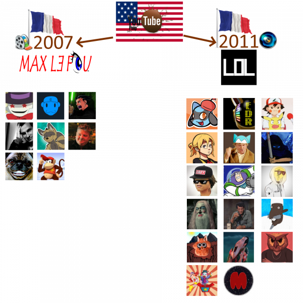

![[ANA JDG] Asterix and the Great Rescue - Megadrive](../vi/6oUXi0ckLmA/default.jpg)
![[ Présentation pour la chaîne Grenier des Joueurs ] JDG Prod](../art/SHAR.6419.583.2.jpg)


![[ La vie des Poopeurs ] EnfluredeRenard](../5252/79895252/pics/3340460092_1_3_NLm9COdc.png)
Introduction
Bien le bonjour les bonnes gens et bienvenue dans "La Vie Des Poopeurs", une Poopémission où nous allons présenter un poopeur de part l'histoire de sa chaîne.
Aujourd'hui, nous avons décidé de braquer nos loupes sur EnfluredeRenard !
Avant 2012: Le Renard est cachottier
Dans un tweet du 27 Octobre 2020, on apprend qu'EnfluredeRenard a réellement commencé les YouTube Poop en décembre 2011 mais sa première chaîne YouTube ayant été supprimée, il aura re-publié ses plus récentes sur la chaîne actuelle.
On sait que sa toute première YouTube Poop avait comme source Morsay et qu'encore aujourd'hui, il garde une dizaine de YouTube Poop inédites sur son disque dur. Quel cachottier ce goupil !
C'est donc le 19 Novembre 2012 qu'il créera la chaîne "EnfluredeRenard".
2012 : Le terrier lumineux
EnfluredeRenard étant un poopeur de 2011 tout comme JeFaisChierLesGens, son style de YouTube Poop est très appuyé sur les visuels et les effets de montages que ne permet pas ce bon vieux Windows Movie Maker.
La première YouTube Poop à être publié sur la chaîne le 28 Décembre 2012 et à pour titre
"[YTP]Fr » Je cherche une idée de titre :| ". C'est une re-publication d'une YTP qu'il avait sortit le 29 Juillet 2012 !
Les sources de cette YouTube Poop sont Hello Kitty, un film français , Olivier de Carglass et la PUB pour la sécurité routière.
Cette première YouTube est assez dynamique et variée avec:
- Une modification toutes les 2 secondes
- Du sentence-mixing qui ne traine pas en longueur
- De la mise en scène
Ces 3 éléments ne vienne pas du fruit du hasard car le Hasard n'est pas un arbre et EnfluredeRenard est un être humain influençable tout comme vous donc abonnez-vous, mettez un pouce bleu, un commentaire et partager cette vidéo !
Le renard sous influence

Comme tout bon historien de la YouTube Poop doit savoir, il y a eût deux grandes périodes d'influence dans la communauté poopesque francophone.
La première fut celle de MaxLeFou car il a popularisé la création de YouTube Poop en France en 2007 jusqu'à 2010 avec Windows Movie Maker.
La deuxième fut celle de JeFaisChierLesGens qui a popularisé la création de YouTube Poop en France en 2011 jusqu'à aujourd'hui avec Sony Vegas et After Effect.
EnfluredeRenard est un descendant du courant de JeFaisChierLesGens. Le visuel est soigné et la maîtrise du sentence-mixing et de la gestion d'ambiance est courante dans ses YouTube Poop.
On peut citer des contemporains à EnfluredeRenard qui sont dans la même mouvance pour aller plus loin:
- King Harkinian
- Sacré Chieur
- Capitaine Sadako
- Père Doriot
- SuperRosel
Tous se sont influencés et ont permis à la communauté d'être visible et féconde durant des années.
2013-2014: Le renard est pressé
![[ La vie des Poopeurs ] EnfluredeRenard](../5252/79895252/pics/3340460092_1_7_IAEOHLQ1.png)
Après avoir publié " [YTPMV]» Old Spice & Mutombo " le 13 janvier 2013 pour en terminer avec ces 7 re-publications, il recommence à ressortir des YouTube Poop originales en commençant par " [YTP]Fr » Révolte " le 6 mars 2013.
EnfluredeRenard publiera 28 YouTube Poop entre le 13 janvier 2013 et le 27 Décembre 2014. On peut dire qu'il n'aura pas perdu de temps car sur la même période, JeFaisChierLesGens aura sortit 6 YouTube Poop et King Harkinian rivalisera largement avec 54.
Dans ces 28 YouTube Poop, nous retrouvons:
- 3 YouTube Poop Musical Video
- Les 4 épisodes de "C'est Pas Saucisse"
- Une YouTube Poop Tennis
Notre malandrin de goupil se rapprochera de la communauté des poopeurs en cette période VIA le Skype des poopeurs français.
2015-2017: Morsay Mad Festival
S'il fallait frapper un grand coup pour prouver par A+B que les YouTube Poop sont de l'art, il faudrait montrer les 3 Morsay Mad Festival.

Truand2laCollab
Partagez vos vidéos avec vos amis, vos proches et le monde entier
via : www.youtube.com
Pour ceux qui n'aurait pas encore regardé ces YouTube Poop Musical Video d'une qualité supérieur, ce sont des vidéos sorties pour fêter l'anniversaire de Morsay en musique avec pleins d'effet visuel et de chansons connues de l'univers des Geeks et des Weebs. Du grand spectacle pour les mirettes et les oreilles, de très grand crût ces années-là !
Mettons entre parenthèse que le terme "MAD" provient de la communauté weeb et qualifie le fait de créer une succession de musique qui se coupe. C'est un procédé qui aurait eût pour origine les VHS au Japon. Nous n'irons guère plus loin sur le sujet.
Notre poopeur du jour aura participé aux deux premiers Morsay Mad Festival avec Leffy62z , King Harkinian et pleins d'autres qui ne sont pas nécessairement des poopeurs.
Malheureusement, les Morsay Mad Festival prendront fin en 2018 faute d'inspiration, de flemme et de travail.
Mais EnfluredeRenard offrira toujours du grand spectacle avec...
Bonne Nuit les Tipeu
Du rap, Bonne Nuit les Petits et la validation par Brigitte LeCordier auront permis à EnfluredeRenard de percer comme jamais un poopeur n'a jamais percé.
Le 28 Mai 2018, EnfluredeRenard nous aura largué une YouTube Poop contenant:
- Une intro en rap
- Beaucoup de motion-design
- Quelques catchphrases tel que le "Enfaites non"
- De la mise en scène
- Du très bon sentence-mixing
Ce fût un grand cap car beaucoup de vidéaste ont pût en parler, des catchphrases ont pût être reprises pour en faire des mèmes et ça a relancé la production de YouTube Poop pendant toute l'année 2018.
Comme ce fût l'apogée de la chaîne d'EnfluredeRenard, nous pouvons nous quittez ici mais rajoutons que c'est grâce à cette performance qu'il a gagné en activité sur Twitter en devenant une Poopstar et en commençant à faire le comique avec Krono Muzik.
Bien le bonsoir les bonnes gens et à bientôt dans "La Vie Des Poopeurs".
Twitter: https://twitter.com/RenardYT
Instagram: https://www.instagram.com/ronaaare/
YouTube: https://www.youtube.com/c/EnfluredeRenard/videos
![[ Critique2Glin ] OpenShot Video Editor](../5252/79895252/pics/3340385606_1_8_UzfamQgJ.png)
![[ Critique2Glin ] OpenShot Video Editor](../5252/79895252/pics/3340385606_1_4_sX89CT7I.png)
![[ Critique2Glin ] OpenShot Video Editor](../5252/79895252/pics/3340385606_1_6_Os4MxMyH.png)
![[ PUB ] Ma chaîne de YouTube Poop !](../5252/79895252/pics/3340130668_1_2_Ulr982Zy.png)
![[ Présentation ] Second Sight : Les OOBs ( Out Of Bounds )](../5252/79895252/pics/3339552234_1_4_llRPVpnE.png)
![[ Présentation ] Second Sight : Les OOBs ( Out Of Bounds )](../5252/79895252/pics/3339552234_1_8_DnX84Oxi.png)
![[ Présentation ] Second Sight : Les OOBs ( Out Of Bounds )](../5252/79895252/pics/3339552234_1_12_qkxme0w3.png)
![[ Présentation ] Second Sight : Les OOBs ( Out Of Bounds )](../5252/79895252/pics/3339552234_1_14_6GYBv2uM.png)

![[ PUB ] Ressources2Glin](../5252/79895252/pics/3337498164_1_2_O1K4b6b7.png) Le premier Avril 2019, j'avais créé une chaîne YouTube me permettant de partager les ressources que je ne pouvais pas considéré comme des "Délires" ou des YTPs !
Le premier Avril 2019, j'avais créé une chaîne YouTube me permettant de partager les ressources que je ne pouvais pas considéré comme des "Délires" ou des YTPs !![[ PUB ] Des artistes à commissions](../5252/79895252/pics/3337434174_1_2_FPkjwIZ2.jpg)
![[ PUB ] Des artistes à commissions](../5252/79895252/pics/3337434174_1_4_jW7KmlC9.jpg)
![[ PUB ] Des artistes à commissions](../5252/79895252/pics/3337434174_1_6_pwPIa7j9.jpg)

![[ Présentation ] Le refus du remix !](../5252/79895252/pics/3336413444_1_2_3wW68cwG.png)
![[Texte pour une vidéo] Pourquoi j'aimais : Mickael J](../5252/79895252/pics/3334587774_1_3_rp6TdGF2.png)


![[Comment?]J'ai créé "Professeur Layton combat le nazisme (partie 3)" !](../5252/79895252/pics/3332589728_1_8_gEYARFhK.png)
![[Comment?]J'ai créé "Professeur Layton combat le nazisme (partie 3)" !](../5252/79895252/pics/3332589728_1_2_WcT9g3Fk.png)
![[Comment?]J'ai créé "Professeur Layton combat le nazisme (partie 3)" !](../5252/79895252/pics/3332589728_1_4_varcYxFq.png)
![[Comment?]J'ai créé "Professeur Layton combat le nazisme (partie 3)" !](../5252/79895252/pics/3332589728_1_6_C0FLmhcT.png)
![[Comment?]Créer un motif pour Animal Crossing à partir d'une photo !](../5252/79895252/pics/3332476030_1_5_7RgsuCYC.png) Le logiciel en ligne
Le logiciel en ligne 
Partage